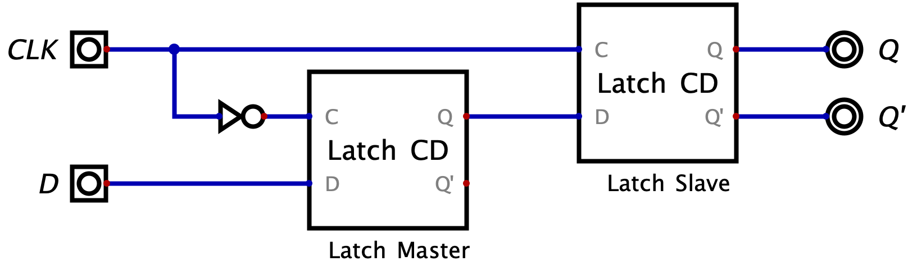

Definizione - Flip-flop D
Il Flip-flop D  è una rete sequenziale asincrona caratterizzata da:
è una rete sequenziale asincrona caratterizzata da:
A seguito del campionamento, l'uscita Q riflette il valore campionato con un ritardo che permette il montaggio in retroazione.
I tempi caratteristici di un Flip-flop D hanno gli stessi nomi di quelli del Latch CD, ma con significati leggermente diversi in quanto sono tutti riferiti al fronte di salita del clock (in quanto è l'unico evento che può modificare lo stato). In particolare si ha che: Per comprendere il funzionamento, può essere utile immaginare i due ingressi in uno stato di quiete, entrambi a \( 0\). In questa situazione si ha che il "Latch Master" è in fase di campionamento (grazie al NOT che trasforma il segnale in \( 1\)) mentre l'altro è in fase di stabilità. Nel momento in cui CLK passa da \( 0\) a \( 1\), si ha che il "Latch Slave" inizia il campionamento e in questo momento assume il valore "memorizzato" nel Master (che ha continuato a memorizzare il valore di D). Fino a che CLK non vedrà un altro fronte di salita, la rete non riaggiornerà le sue uscite dato che:
Un'altra sintesi possibile è quella "Edge-Triggered": essa contiene scelte progettuali non intuitive (come l'utilizzo di tre variabili di stato) ma utilizza meno gate rispetto a quella "Master-Slave". Essa utilizza infatti solo 6 NAND (invece di 8) e prevede che i comandi \( PRE'\) e \( CLR'\) siano prioritari rispetto al segnale CLK: per questo motivo essi sono detti comandi asincroni.
- un ingresso \( D\), che indica il dato da memorizzare;
- un ingresso \( CLK\), che svolge il ruolo di segnale di campionamento;
- due uscite che rendono disponibile il valore del bit memorizzato (\( Q\)) ed il suo complemento (\( Q'\)).
A seguito del campionamento, l'uscita Q riflette il valore campionato con un ritardo che permette il montaggio in retroazione.
I tempi caratteristici di un Flip-flop D hanno gli stessi nomi di quelli del Latch CD, ma con significati leggermente diversi in quanto sono tutti riferiti al fronte di salita del clock (in quanto è l'unico evento che può modificare lo stato). In particolare si ha che:
- il tempo di set-up indica il tempo minimo per cui D deve rimanere costante prima del fronte;
- il tempo di hold indica il tempo minimo per cui D deve rimanere costante dopo al fronte;
- il tempo di risposta indica il tempo massimo del transitorio delle uscite Q e Q'.

- fino a che CLK rimane a \( 1\) si avrà che il Master non è in campionamento (e continua a memorizzare il segnale "attuale per la rete" di D);
- quando CLK passa a \( 1\) a \( 0\), sarà lo Slave a terminare il campionamento (e a non riaggiornarsi).
Un'altra sintesi possibile è quella "Edge-Triggered": essa contiene scelte progettuali non intuitive (come l'utilizzo di tre variabili di stato) ma utilizza meno gate rispetto a quella "Master-Slave". Essa utilizza infatti solo 6 NAND (invece di 8) e prevede che i comandi \( PRE'\) e \( CLR'\) siano prioritari rispetto al segnale CLK: per questo motivo essi sono detti comandi asincroni.
Definizione - Flip-flop D come elemento di ritardo
Se l'ingresso CLK è pilotato da un segnale periodico (detto di clock) il Flip-flop ritarda il segnale di uscita Q (rispetto al segnale di ingresso D) di un tempo pari al periodo di clock. Si ha quindi che il clock divide il tempo in intervalli discreti in cui vale la relazione \[ Q^{n + 1} = D^{n} \] ovvero si ha che l'uscita Q all'istante \( n + 1\) è uguale all'ingresso D all'istante precedente \( n\).